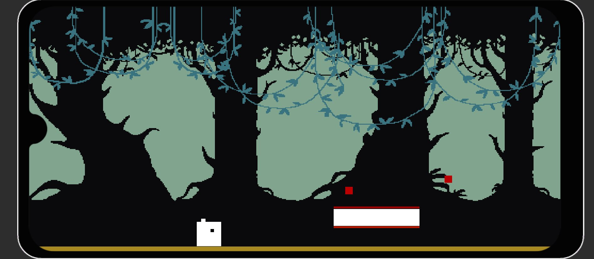
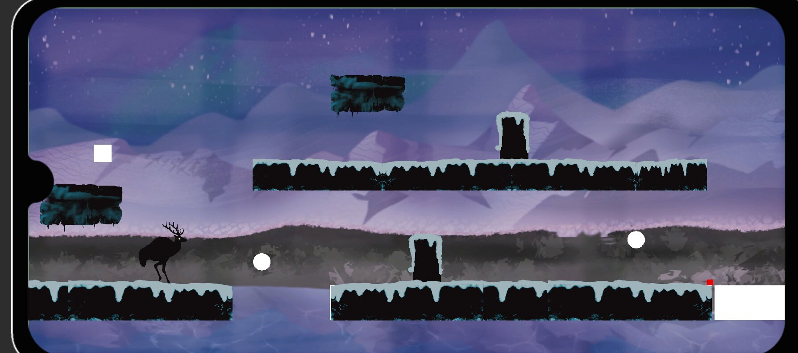
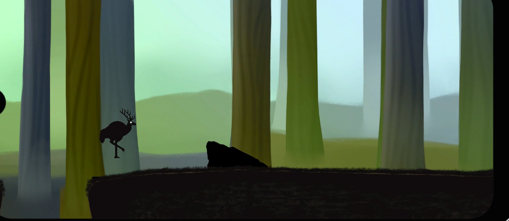
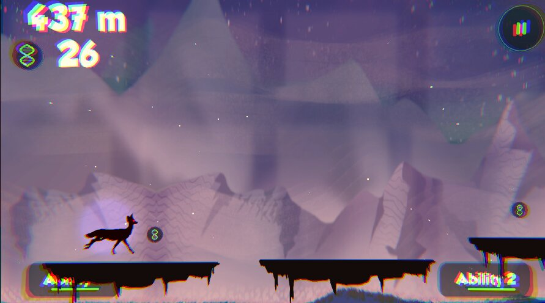
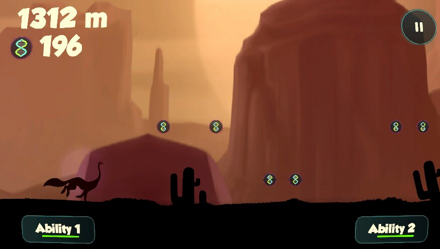

Overview
Lab Run is a 2D endless runner mobile game developed in Unity during a 4-week school project.
What's special:
- 3 Unique Biomes – Each with distinct visuals & obstacles
- Animal Fusion System – Mix 2 animals for game-changing abilities
- Procedural Obstacles – Never the same run twice
- Collect Coins and Progress the Skill Tree – Upgrade the animals
My Role
In this project, I was a Game Designer and primarily responsible for:
- Prototyping: Implemented the core game mechanics and allowed the team to gain an early understanding of the game's overall look and feel.
- Level Design: Responsible for creating the different levels in the game.
- Lighting: Added lighting and post process effects to bring the level to life.
- Documentation: Helped shape the GDD for clear communication within the team.
- Sound Implementation: Integrated FMOD and contributed to sound effects implementation.
Pre Production



Final Product


Conclusion
What really stood out to me was the importance of communication. This was my first experience working in a team environment, and it provided valuable insight into production workflows and collaboration.
Receiving and applying feedback played a crucial role in improving both the gameplay experience and my personal growth as a designer.
Overall, Lab Run was a valuable experience in understanding iteration, production timelines and teamwork.